17 Charts: strip distributions
Strip charts showing the distribution of each level’s values: summaries (box, violin) and the values themselves (stripplot, beeswarm, dotplot, rug). Placement, width and grouping across the strip are the Strip options group every one of them takes. Each chart lists the mapping keys it reads, its own options and the shared option groups it takes.
(ns reference.charts-strip-distributions
(:require [fastmath.random :as r]
[cljplot2.chart :as chart]
[cljplot2.core :as plot]
[cljplot2.describe :as describe]
[notebook-utils :as nu]))Data: Edgar Anderson’s iris measurements, R datasets package iris (Anderson 1935; Fisher 1936); licence: Part of R (GPL-2 | GPL-3).
(def iris (nu/dataset :iris))| sepal-length | sepal-width | petal-length | petal-width | species |
|---|---|---|---|---|
| 5.1 | 3.5 | 1.4 | 0.2 | setosa |
| 4.9 | 3 | 1.4 | 0.2 | setosa |
| 4.7 | 3.2 | 1.3 | 0.2 | setosa |
| 4.6 | 3.1 | 1.5 | 0.2 | setosa |
| 5 | 3.6 | 1.4 | 0.2 | setosa |
| 5.4 | 3.9 | 1.7 | 0.4 | setosa |
| 4.6 | 3.4 | 1.4 | 0.3 | setosa |
| 5 | 3.4 | 1.5 | 0.2 | setosa |
| 4.4 | 2.9 | 1.4 | 0.2 | setosa |
| 4.9 | 3.1 | 1.5 | 0.1 | setosa |
| 5.4 | 3.7 | 1.5 | 0.2 | setosa |
| 4.8 | 3.4 | 1.6 | 0.2 | setosa |
| 4.8 | 3 | 1.4 | 0.1 | setosa |
| 4.3 | 3 | 1.1 | 0.1 | setosa |
| 5.8 | 4 | 1.2 | 0.2 | setosa |
| 5.7 | 4.4 | 1.5 | 0.4 | setosa |
| 5.4 | 3.9 | 1.3 | 0.4 | setosa |
| 5.1 | 3.5 | 1.4 | 0.3 | setosa |
| 5.7 | 3.8 | 1.7 | 0.3 | setosa |
| 5.1 | 3.8 | 1.5 | 0.3 | setosa |
| 5.4 | 3.4 | 1.7 | 0.2 | setosa |
| 5.1 | 3.7 | 1.5 | 0.4 | setosa |
| 4.6 | 3.6 | 1 | 0.2 | setosa |
| 5.1 | 3.3 | 1.7 | 0.5 | setosa |
| 4.8 | 3.4 | 1.9 | 0.2 | setosa |
| 5 | 3 | 1.6 | 0.2 | setosa |
| 5 | 3.4 | 1.6 | 0.4 | setosa |
| 5.2 | 3.5 | 1.5 | 0.2 | setosa |
| 5.2 | 3.4 | 1.4 | 0.2 | setosa |
| 4.7 | 3.2 | 1.6 | 0.2 | setosa |
| 4.8 | 3.1 | 1.6 | 0.2 | setosa |
| 5.4 | 3.4 | 1.5 | 0.4 | setosa |
| 5.2 | 4.1 | 1.5 | 0.1 | setosa |
| 5.5 | 4.2 | 1.4 | 0.2 | setosa |
| 4.9 | 3.1 | 1.5 | 0.2 | setosa |
| 5 | 3.2 | 1.2 | 0.2 | setosa |
| 5.5 | 3.5 | 1.3 | 0.2 | setosa |
| 4.9 | 3.6 | 1.4 | 0.1 | setosa |
| 4.4 | 3 | 1.3 | 0.2 | setosa |
| 5.1 | 3.4 | 1.5 | 0.2 | setosa |
| 5 | 3.5 | 1.3 | 0.3 | setosa |
| 4.5 | 2.3 | 1.3 | 0.3 | setosa |
| 4.4 | 3.2 | 1.3 | 0.2 | setosa |
| 5 | 3.5 | 1.6 | 0.6 | setosa |
| 5.1 | 3.8 | 1.9 | 0.4 | setosa |
| 4.8 | 3 | 1.4 | 0.3 | setosa |
| 5.1 | 3.8 | 1.6 | 0.2 | setosa |
| 4.6 | 3.2 | 1.4 | 0.2 | setosa |
| 5.3 | 3.7 | 1.5 | 0.2 | setosa |
| 5 | 3.3 | 1.4 | 0.2 | setosa |
| 7 | 3.2 | 4.7 | 1.4 | versicolor |
| 6.4 | 3.2 | 4.5 | 1.5 | versicolor |
| 6.9 | 3.1 | 4.9 | 1.5 | versicolor |
| 5.5 | 2.3 | 4 | 1.3 | versicolor |
| 6.5 | 2.8 | 4.6 | 1.5 | versicolor |
| 5.7 | 2.8 | 4.5 | 1.3 | versicolor |
| 6.3 | 3.3 | 4.7 | 1.6 | versicolor |
| 4.9 | 2.4 | 3.3 | 1 | versicolor |
| 6.6 | 2.9 | 4.6 | 1.3 | versicolor |
| 5.2 | 2.7 | 3.9 | 1.4 | versicolor |
| 5 | 2 | 3.5 | 1 | versicolor |
| 5.9 | 3 | 4.2 | 1.5 | versicolor |
| 6 | 2.2 | 4 | 1 | versicolor |
| 6.1 | 2.9 | 4.7 | 1.4 | versicolor |
| 5.6 | 2.9 | 3.6 | 1.3 | versicolor |
| 6.7 | 3.1 | 4.4 | 1.4 | versicolor |
| 5.6 | 3 | 4.5 | 1.5 | versicolor |
| 5.8 | 2.7 | 4.1 | 1 | versicolor |
| 6.2 | 2.2 | 4.5 | 1.5 | versicolor |
| 5.6 | 2.5 | 3.9 | 1.1 | versicolor |
| 5.9 | 3.2 | 4.8 | 1.8 | versicolor |
| 6.1 | 2.8 | 4 | 1.3 | versicolor |
| 6.3 | 2.5 | 4.9 | 1.5 | versicolor |
| 6.1 | 2.8 | 4.7 | 1.2 | versicolor |
| 6.4 | 2.9 | 4.3 | 1.3 | versicolor |
| 6.6 | 3 | 4.4 | 1.4 | versicolor |
| 6.8 | 2.8 | 4.8 | 1.4 | versicolor |
| 6.7 | 3 | 5 | 1.7 | versicolor |
| 6 | 2.9 | 4.5 | 1.5 | versicolor |
| 5.7 | 2.6 | 3.5 | 1 | versicolor |
| 5.5 | 2.4 | 3.8 | 1.1 | versicolor |
| 5.5 | 2.4 | 3.7 | 1 | versicolor |
| 5.8 | 2.7 | 3.9 | 1.2 | versicolor |
| 6 | 2.7 | 5.1 | 1.6 | versicolor |
| 5.4 | 3 | 4.5 | 1.5 | versicolor |
| 6 | 3.4 | 4.5 | 1.6 | versicolor |
| 6.7 | 3.1 | 4.7 | 1.5 | versicolor |
| 6.3 | 2.3 | 4.4 | 1.3 | versicolor |
| 5.6 | 3 | 4.1 | 1.3 | versicolor |
| 5.5 | 2.5 | 4 | 1.3 | versicolor |
| 5.5 | 2.6 | 4.4 | 1.2 | versicolor |
| 6.1 | 3 | 4.6 | 1.4 | versicolor |
| 5.8 | 2.6 | 4 | 1.2 | versicolor |
| 5 | 2.3 | 3.3 | 1 | versicolor |
| 5.6 | 2.7 | 4.2 | 1.3 | versicolor |
| 5.7 | 3 | 4.2 | 1.2 | versicolor |
| 5.7 | 2.9 | 4.2 | 1.3 | versicolor |
| 6.2 | 2.9 | 4.3 | 1.3 | versicolor |
| 5.1 | 2.5 | 3 | 1.1 | versicolor |
| 5.7 | 2.8 | 4.1 | 1.3 | versicolor |
| … | … | … | … | … |
Data: Motor Trend car road tests (1974), R datasets package mtcars (Henderson & Velleman 1981); licence: Part of R (GPL-2 | GPL-3).
(def mtcars (nu/dataset :mtcars))| model | mpg | cyl | disp | hp | drat | wt | qsec | vs | am | gear | carb |
|---|---|---|---|---|---|---|---|---|---|---|---|
| Mazda RX4 | 21 | 6 | 160 | 110 | 3.9 | 2.62 | 16.46 | 0 | 1 | 4 | 4 |
| Mazda RX4 Wag | 21 | 6 | 160 | 110 | 3.9 | 2.875 | 17.02 | 0 | 1 | 4 | 4 |
| Datsun 710 | 22.8 | 4 | 108 | 93 | 3.85 | 2.32 | 18.61 | 1 | 1 | 4 | 1 |
| Hornet 4 Drive | 21.4 | 6 | 258 | 110 | 3.08 | 3.215 | 19.44 | 1 | 0 | 3 | 1 |
| Hornet Sportabout | 18.7 | 8 | 360 | 175 | 3.15 | 3.44 | 17.02 | 0 | 0 | 3 | 2 |
| Valiant | 18.1 | 6 | 225 | 105 | 2.76 | 3.46 | 20.22 | 1 | 0 | 3 | 1 |
| Duster 360 | 14.3 | 8 | 360 | 245 | 3.21 | 3.57 | 15.84 | 0 | 0 | 3 | 4 |
| Merc 240D | 24.4 | 4 | 146.7 | 62 | 3.69 | 3.19 | 20 | 1 | 0 | 4 | 2 |
| Merc 230 | 22.8 | 4 | 140.8 | 95 | 3.92 | 3.15 | 22.9 | 1 | 0 | 4 | 2 |
| Merc 280 | 19.2 | 6 | 167.6 | 123 | 3.92 | 3.44 | 18.3 | 1 | 0 | 4 | 4 |
| Merc 280C | 17.8 | 6 | 167.6 | 123 | 3.92 | 3.44 | 18.9 | 1 | 0 | 4 | 4 |
| Merc 450SE | 16.4 | 8 | 275.8 | 180 | 3.07 | 4.07 | 17.4 | 0 | 0 | 3 | 3 |
| Merc 450SL | 17.3 | 8 | 275.8 | 180 | 3.07 | 3.73 | 17.6 | 0 | 0 | 3 | 3 |
| Merc 450SLC | 15.2 | 8 | 275.8 | 180 | 3.07 | 3.78 | 18 | 0 | 0 | 3 | 3 |
| Cadillac Fleetwood | 10.4 | 8 | 472 | 205 | 2.93 | 5.25 | 17.98 | 0 | 0 | 3 | 4 |
| Lincoln Continental | 10.4 | 8 | 460 | 215 | 3 | 5.424 | 17.82 | 0 | 0 | 3 | 4 |
| Chrysler Imperial | 14.7 | 8 | 440 | 230 | 3.23 | 5.345 | 17.42 | 0 | 0 | 3 | 4 |
| Fiat 128 | 32.4 | 4 | 78.7 | 66 | 4.08 | 2.2 | 19.47 | 1 | 1 | 4 | 1 |
| Honda Civic | 30.4 | 4 | 75.7 | 52 | 4.93 | 1.615 | 18.52 | 1 | 1 | 4 | 2 |
| Toyota Corolla | 33.9 | 4 | 71.1 | 65 | 4.22 | 1.835 | 19.9 | 1 | 1 | 4 | 1 |
| Toyota Corona | 21.5 | 4 | 120.1 | 97 | 3.7 | 2.465 | 20.01 | 1 | 0 | 3 | 1 |
| Dodge Challenger | 15.5 | 8 | 318 | 150 | 2.76 | 3.52 | 16.87 | 0 | 0 | 3 | 2 |
| AMC Javelin | 15.2 | 8 | 304 | 150 | 3.15 | 3.435 | 17.3 | 0 | 0 | 3 | 2 |
| Camaro Z28 | 13.3 | 8 | 350 | 245 | 3.73 | 3.84 | 15.41 | 0 | 0 | 3 | 4 |
| Pontiac Firebird | 19.2 | 8 | 400 | 175 | 3.08 | 3.845 | 17.05 | 0 | 0 | 3 | 2 |
| Fiat X1-9 | 27.3 | 4 | 79 | 66 | 4.08 | 1.935 | 18.9 | 1 | 1 | 4 | 1 |
| Porsche 914-2 | 26 | 4 | 120.3 | 91 | 4.43 | 2.14 | 16.7 | 0 | 1 | 5 | 2 |
| Lotus Europa | 30.4 | 4 | 95.1 | 113 | 3.77 | 1.513 | 16.9 | 1 | 1 | 5 | 2 |
| Ford Pantera L | 15.8 | 8 | 351 | 264 | 4.22 | 3.17 | 14.5 | 0 | 1 | 5 | 4 |
| Ferrari Dino | 19.7 | 6 | 145 | 175 | 3.62 | 2.77 | 15.5 | 0 | 1 | 5 | 6 |
| Maserati Bora | 15 | 8 | 301 | 335 | 3.54 | 3.57 | 14.6 | 0 | 1 | 5 | 8 |
| Volvo 142E | 21.4 | 4 | 121 | 109 | 4.11 | 2.78 | 18.6 | 1 | 1 | 4 | 2 |
17.1 box
A box per level (and group): the quartiles, the median, whiskers to the most extreme values within 1.5 IQR of the box and the outliers past them - computed from the values …
| Option | Type | Default | Description |
|---|---|---|---|
| :x | a keyword, a function or a categorical marker of one or nil | values (data units) on the value axis (not read with :stat :identity), or levels for vertical boxes | |
| :y | a keyword, a function or a categorical marker of one or nil | levels on the categorical axis (absent - one box), or values for vertical boxes | |
| :color | a keyword, a function or a categorical marker of one or nil | groups, each a box in its own fill colour | |
| :pattern | a keyword, a function or a categorical marker of one or nil | groups, each a box with its own fill pattern | |
| :shape | a keyword, a function or a categorical marker of one or nil | groups, each with its own outlier shape | |
| :size | a keyword, a function or a categorical marker of one or nil | groups, each with its own outlier size | |
| :group | a keyword, a function or a categorical marker of one or nil | groups without a visual aesthetic, each its own box |
(plot/render-image {:data iris
:mapping {:x :sepal-width :y :species :color :species}
:charts [(chart/box)]
:scales {:y {:reverse true}}
:legend false}
{:width 600 :height 300})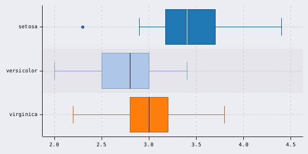
… or read from rows of precomputed statistics, one row per level and group, with :stat :identity:
| Option | Type | Default | Description |
|---|---|---|---|
| :lower | a keyword, a function or a categorical marker of one or nil | with :stat :identity, the statistics of a level and group: the lower whisker end | |
| :q1 | a keyword, a function or a categorical marker of one or nil | with :stat :identity, the statistics of a level and group: the first quartile | |
| :median | a keyword, a function or a categorical marker of one or nil | with :stat :identity, the statistics of a level and group: the median | |
| :q3 | a keyword, a function or a categorical marker of one or nil | with :stat :identity, the statistics of a level and group: the third quartile | |
| :upper | a keyword, a function or a categorical marker of one or nil | with :stat :identity, the statistics of a level and group: the upper whisker end | |
| :outliers | a keyword, a function or a categorical marker of one or nil | with :stat :identity, the statistics of a level and group: a collection of outlier values (optional) | |
| :mean | a keyword, a function or a categorical marker of one or nil | with :stat :identity, the statistics of a level and group: the mean (needed by the :mean option) | |
| :n | a keyword, a function or a categorical marker of one or nil | with :stat :identity, the statistics of a level and group: the count (needed by :varwidth and :n-label) |
(def summaries [{:site "north" :lower 2.1 :q1 3.4 :median 4.0 :q3 4.9 :upper 6.3 :outliers [7.4 8.0] :mean 4.3 :n 40}
{:site "south" :lower 1.0 :q1 2.2 :median 2.9 :q3 3.3 :upper 4.4 :outliers [0.2] :mean 2.8 :n 15}
{:site "east" :lower 3.0 :q1 4.1 :median 5.2 :q3 5.8 :upper 7.0 :outliers [] :mean 5.0 :n 90}])| upper | q1 | q3 | mean | site | n | outliers | median | lower |
|---|---|---|---|---|---|---|---|---|
| 6.3 | 3.4 | 4.9 | 4.3 | north | 40 | [7.4 8.0] | 4.0 | 2.1 |
| 4.4 | 2.2 | 3.3 | 2.8 | south | 15 | [0.2] | 2.9 | 1.0 |
| 7.0 | 4.1 | 5.8 | 5.0 | east | 90 | [] | 5.2 | 3.0 |
(plot/render-image {:data summaries
:mapping {:y :site :lower :lower :q1 :q1 :median :median :q3 :q3 :upper :upper
:outliers :outliers :mean :mean :n :n}
:charts [(chart/box {:stat :identity :mean true :varwidth true})]
:scales {:y {:reverse true}}
:labels {:x "value"}}
{:width 600 :height 280})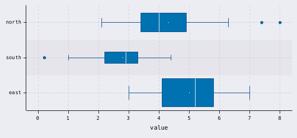
Its options: the box and outlier style, the statistics, outliers on or off, the mean marker, widths by count and the Tufte variant (whisker lines and a median point):
| Option | Type | Default | Description |
|---|---|---|---|
| :color | a clojure2d color | [69.0 117.0 180.0 255.0] | box fill colour; the Tufte variant's median point and mean marker (a mapped :color wins) |
| :stroke-color | :darker or a clojure2d color or :none | :darker | outline colour: a colour, :none or :darker (the darkened fill); also the whiskers and outlier outlines |
| :stroke-width | a non-negative number | 1 | outline and whisker width in pixels |
| :shape | a shape character, keyword or shape map | \O | outlier point shape, also the Tufte median point (a mapped :shape wins) |
| :size | a non-negative number | 5 | outlier point size in pixels, also the Tufte median point; the mean marker is half of it (a mapped :size wins) |
| :stat | one of :tukey :identity | :tukey | statistics: :tukey (computed from the values) or :identity (pre-aggregated, one row per level and group read through the mapping keys :lower :q1 :median :q3 :upper) |
| :outliers | true or false or nil | true | draw the outliers (and include them in the value extent) |
| :mean | true or false or nil | false | draw a mean marker (with :stat :identity it needs :mean mapped) |
| :varwidth | true or false or nil | false | box width proportional to the square root of its count, relative to the largest (with :stat :identity it needs :n mapped) |
| :variant | one of :classic :tufte or nil | :classic | drawing: :classic (box, median line, whiskers with caps) or :tufte (Tufte's quartile plot: whisker lines and a median point, no box) |
| :padding | map of one of :x :y to [lo hi], non-negative numbers | [0.05 0.05] along the value axis; with :place :bottom also :bottom-share below the data | padding of the data span per position axis, {:x [lo hi] :y [lo hi]} fractions of the span |
(plot/render-image (plot/arrange [{:data mtcars
:mapping {:x :mpg :y :cyl}
:charts [(chart/box {:color [230 160 60] :stroke-color :black :stroke-width 2 :shape \x :size 9
:mean true})]
:scales {:y {:type :categorical :reverse true}}
:labels {:title "style, :mean true"}}
{:data mtcars
:mapping {:x :mpg :y :cyl}
:charts [(chart/box {:outliers false :varwidth true})]
:scales {:y {:type :categorical :reverse true}}
:labels {:title ":outliers false, :varwidth"}}
{:data mtcars
:mapping {:x :mpg :y :cyl}
:charts [(chart/box {:variant :tufte})]
:scales {:y {:type :categorical :reverse true}}
:labels {:title ":variant :tufte"}}]
{:columns 3})
{:width 1000 :height 300})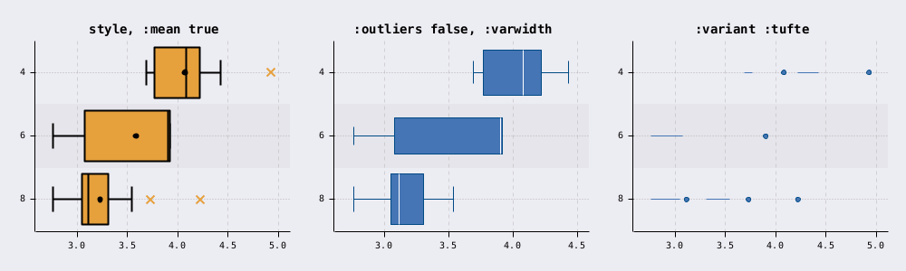
:padding - space past the values along the value axis, fractions of their span (default 5% each side):
(plot/render-image (plot/arrange [{:data mtcars
:mapping {:x :mpg :y :cyl}
:charts [(chart/box)]
:scales {:y {:type :categorical :reverse true}}
:labels {:title "default padding"}}
{:data mtcars
:mapping {:x :mpg :y :cyl}
:charts [(chart/box {:padding {:x [0.4 0.4]}})]
:scales {:y {:type :categorical :reverse true}}
:labels {:title ":padding {:x [0.4 0.4]}"}}]
{:columns 2})
{:width 900 :height 280})
Shared options: Fill patterns (:pattern :pattern-color); Data and mapping (:data :mapping); Named theme styles (:theme-style); Strip options (:place :width :thickness :position :dodge-gap :bottom-share :n-label :n-format :level-axis).
17.2 violin
A mirrored kernel density per level (and group), with inner marks - a small box by default.
| Option | Type | Default | Description |
|---|---|---|---|
| :x | a keyword, a function or a categorical marker of one or nil | values (data units) on the value axis, or levels for vertical violins | |
| :y | a keyword, a function or a categorical marker of one or nil | levels on the categorical axis (absent - one violin), or values for vertical violins | |
| :color | a keyword, a function or a categorical marker of one or nil | groups, each a violin in its own fill colour | |
| :pattern | a keyword, a function or a categorical marker of one or nil | groups, each a violin with its own fill pattern | |
| :group | a keyword, a function or a categorical marker of one or nil | groups without a visual aesthetic, each its own violin |
(plot/render-image {:data iris
:mapping {:x :species :y :petal-length :color :species}
:charts [(chart/violin)]
:legend false}
{:width 600 :height 320})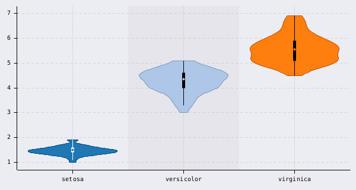
Its options: the fill, outline and inner marks’ colour, the density estimate (kernel, bandwidth, points, how far past the data), how widths compare between violins and the inner marks:
| Option | Type | Default | Description |
|---|---|---|---|
| :color | a clojure2d color | [69.0 117.0 180.0 255.0] | violin fill colour (a mapped :color wins) |
| :stroke-color | :darker or a clojure2d color or :none | :darker | outline colour: a colour, :none or :darker (the darkened fill) |
| :stroke-width | a non-negative number | 1 | outline width in pixels |
| :inner-color | a clojure2d color or :none | :none | colour of the inner marks (:none - black or white, whichever reads better on the fill) |
| :kernel | keyword | :gaussian | density kernel (a fastmath kernel keyword) |
| :bandwidth | a positive number or keyword | :nrd0 | kernel bandwidth in data units, or a fastmath bandwidth selector keyword |
| :n | integer, >= 2 or nil | 100 | number of density evaluation points per violin |
| :cut | a non-negative number or nil | 0.0 | how far the violin reaches past the data range, in bandwidths (0 - the data range) |
| :scale | one of :width :area :count | :width | violin widths: :width (each as wide as its slot), :area (equal areas - densities on one scale) or :count (areas proportional to the counts) |
| :varwidth | true or false or nil | false | multiply each violin's width by the square root of its count relative to the largest |
| :inner | one of :box :quartiles :rug :points :none | :box | inner marks: :box (IQR bar, whisker line, median dot), :quartiles (quartile lines across), :rug (a tick per value), :points (values on the centre line) or :none |
| :padding | map of one of :x :y to [lo hi], non-negative numbers | [0.05 0.05] along the value axis; with :place :bottom also :bottom-share below the data | padding of the data span per position axis, {:x [lo hi] :y [lo hi]} fractions of the span |
(plot/render-image (plot/arrange [{:data iris
:mapping {:x :species :y :petal-length}
:charts [(chart/violin {:bandwidth 0.1 :inner :quartiles})]
:labels {:title ":bandwidth 0.1, :inner :quartiles"}}
{:data iris
:mapping {:x :species :y :petal-length}
:charts [(chart/violin {:cut 2 :inner :rug :inner-color [200 40 40]})]
:labels {:title ":cut 2, :inner :rug"}}
{:data mtcars
:mapping {:x :cyl :y :mpg}
:charts [(chart/violin {:scale :count :inner :points})]
:scales {:x {:type :categorical}}
:labels {:title ":scale :count, :inner :points"}}]
{:columns 3})
{:width 1000 :height 320})
The fill and outline, and the density estimate: another kernel, few evaluation points (a coarse outline), widths by count (:varwidth) and the padding:
(plot/render-image (plot/arrange [{:data iris
:mapping {:x :species :y :petal-length}
:charts [(chart/violin {:color [230 160 60] :stroke-color :black :stroke-width 2})]
:labels {:title "fill and outline"}}
{:data iris
:mapping {:x :species :y :petal-length}
:charts [(chart/violin {:kernel :epanechnikov :n 8})]
:labels {:title ":kernel :epanechnikov, :n 8"}}
{:data mtcars
:mapping {:x :cyl :y :mpg}
:charts [(chart/violin {:varwidth true :padding {:y [0.3 0.3]}})]
:scales {:x {:type :categorical}}
:labels {:title ":varwidth, :padding"}}]
{:columns 3})
{:width 1000 :height 320})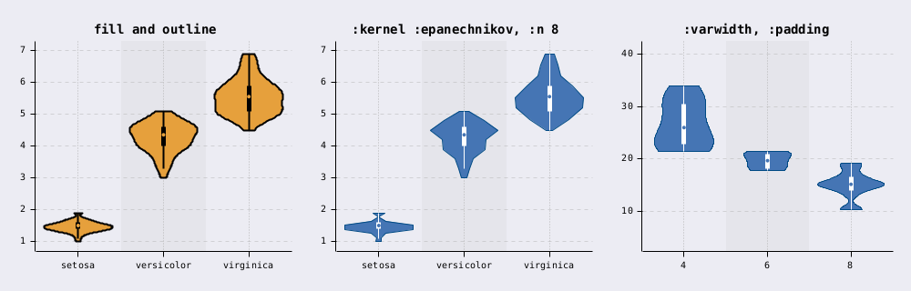
Every :scale - violins as wide as their slots, of equal areas, or of areas by count (mtcars by gears: 15, 12 and 5 cars - the five-gear violin shrinks):
(plot/render-image (plot/arrange [{:data mtcars
:mapping {:x :gear :y :mpg}
:charts [(chart/violin {:scale :width})]
:scales {:x {:type :categorical}}
:labels {:title ":scale :width"}}
{:data mtcars
:mapping {:x :gear :y :mpg}
:charts [(chart/violin {:scale :area})]
:scales {:x {:type :categorical}}
:labels {:title ":scale :area"}}
{:data mtcars
:mapping {:x :gear :y :mpg}
:charts [(chart/violin {:scale :count})]
:scales {:x {:type :categorical}}
:labels {:title ":scale :count"}}]
{:columns 3})
{:width 1000 :height 300})Every :inner mark:
(plot/render-image (plot/arrange [{:data iris :mapping {:x :species :y :petal-length}
:charts [(chart/violin {:inner :box})] :labels {:title ":inner :box"}}
{:data iris :mapping {:x :species :y :petal-length}
:charts [(chart/violin {:inner :quartiles})] :labels {:title ":quartiles"}}
{:data iris :mapping {:x :species :y :petal-length}
:charts [(chart/violin {:inner :rug})] :labels {:title ":rug"}}
{:data iris :mapping {:x :species :y :petal-length}
:charts [(chart/violin {:inner :points})] :labels {:title ":points"}}
{:data iris :mapping {:x :species :y :petal-length}
:charts [(chart/violin {:inner :none})] :labels {:title ":none"}}]
{:columns 5})
{:width 1000 :height 300})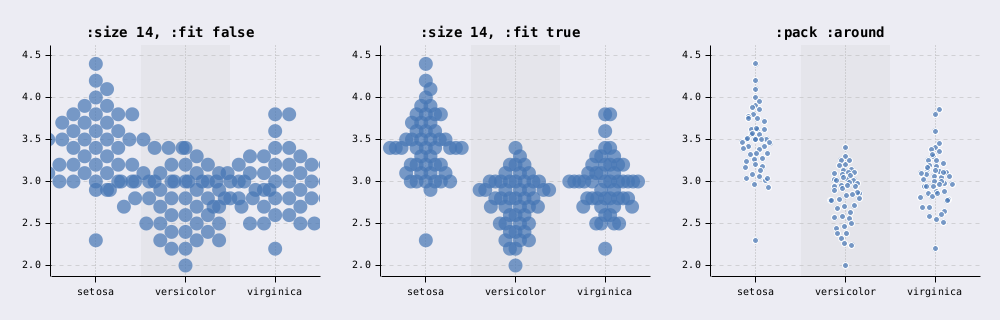
Shared options: Fill patterns (:pattern :pattern-color); Data and mapping (:data :mapping); Named theme styles (:theme-style); Strip options (:place :width :thickness :position :dodge-gap :bottom-share :n-label :n-format :level-axis).
17.3 stripplot
Every value as a point across its level’s strip, jittered so equal values don’t hide each other.
| Option | Type | Default | Description |
|---|---|---|---|
| :x | a keyword, a function or a categorical marker of one or nil | values (data units) on the value axis, or levels for vertical strips | |
| :y | a keyword, a function or a categorical marker of one or nil | levels on the categorical axis (absent - one strip), or values for vertical strips | |
| :color | a keyword, a function or a categorical marker of one or nil | groups, each in its own point colour | |
| :shape | a keyword, a function or a categorical marker of one or nil | groups, each with its own point shape | |
| :size | a keyword, a function or a categorical marker of one or nil | groups, each with its own point size | |
| :group | a keyword, a function or a categorical marker of one or nil | groups without a visual aesthetic |
(plot/render-image {:data iris
:mapping {:x :sepal-length :y :species :color :species}
:charts [(chart/stripplot {:rng (r/rng :mersenne 1)})]
:scales {:y {:reverse true}}
:legend false}
{:width 600 :height 280})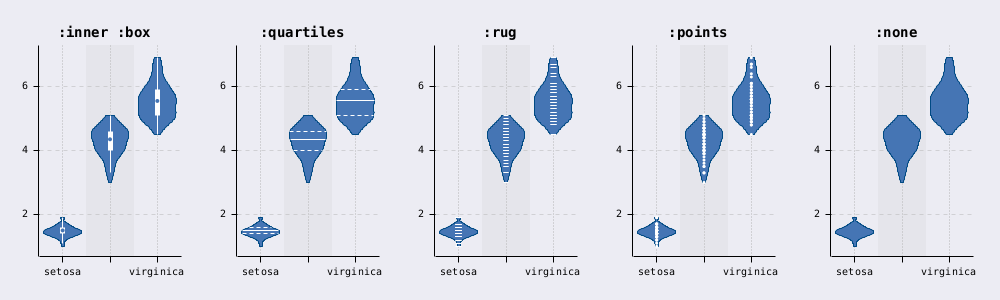
Its options: the point style, the jitter spread (seeded for the same image on every build) and the padding:
| Option | Type | Default | Description |
|---|---|---|---|
| :size | a non-negative number | 6 | point size in pixels (a mapped :size wins) |
| :color | a clojure2d color or :none | [69.0 117.0 180.0 100.0] | point colour (a mapped :color wins) |
| :stroke-color | a clojure2d color or :none | :none | point outline colour (or :none) |
| :stroke-width | a non-negative number | 1 | outline width in pixels |
| :shape | a shape character, keyword or shape map | \O | point shape (a mapped :shape wins) |
| :jitter | a number in [0 1] | 0.25 | jitter spread across the strip, a fraction of the item's cross range (Gaussian, sd :jitter / 4, clamped to ±:jitter / 2; 0 - on the centre line) |
| :rng | a fastmath random generator or nil | a fresh unseeded generator per build (builds differ) | random number generator for jitter (seeded for reproducible plots) |
| :padding | map of one of :x :y to [lo hi], non-negative numbers | [0.05 0.05] along the value axis; with :place :bottom also :bottom-share below the data | padding of the data span per position axis, {:x [lo hi] :y [lo hi]} fractions of the span |
(plot/render-image (plot/arrange [{:data iris
:mapping {:x :sepal-length :y :species}
:charts [(chart/stripplot {:jitter 0})]
:scales {:y {:reverse true}}
:labels {:title ":jitter 0"}}
{:data iris
:mapping {:x :sepal-length :y :species}
:charts [(chart/stripplot {:jitter 0.8 :size 8 :shape \s :color [200 80 40 90]
:stroke-color [120 40 20] :stroke-width 1.5
:rng (r/rng :mersenne 1)})]
:scales {:y {:reverse true}}
:labels {:title ":jitter 0.8, outlined squares"}}
{:data iris
:mapping {:x :sepal-length :y :species}
:charts [(chart/stripplot {:padding {:x [0.3 0.3]} :rng (r/rng :mersenne 1)})]
:scales {:y {:reverse true}}
:labels {:title ":padding {:x [0.3 0.3]}"}}]
{:columns 3})
{:width 1000 :height 280})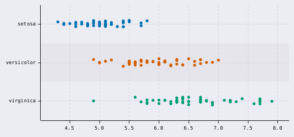
Shared options: Data and mapping (:data :mapping); Named theme styles (:theme-style); Strip options (:place :width :thickness :position :dodge-gap :bottom-share :n-label :n-format :level-axis).
17.4 beeswarm
Every value as a point, packed across the strip without overlaps - the swarm’s width shows the density.
| Option | Type | Default | Description |
|---|---|---|---|
| :x | a keyword, a function or a categorical marker of one or nil | values (data units) on the value axis, or levels for vertical swarms | |
| :y | a keyword, a function or a categorical marker of one or nil | levels on the categorical axis (absent - one swarm), or values for vertical swarms | |
| :color | a keyword, a function or a categorical marker of one or nil | groups, each in its own point colour | |
| :shape | a keyword, a function or a categorical marker of one or nil | groups, each with its own point shape | |
| :size | a keyword, a function or a categorical marker of one or nil | groups, each with its own point size | |
| :group | a keyword, a function or a categorical marker of one or nil | groups without a visual aesthetic |
(plot/render-image {:data iris
:mapping {:x :species :y :petal-length :color :species}
:charts [(chart/beeswarm)]
:legend false}
{:width 600 :height 320})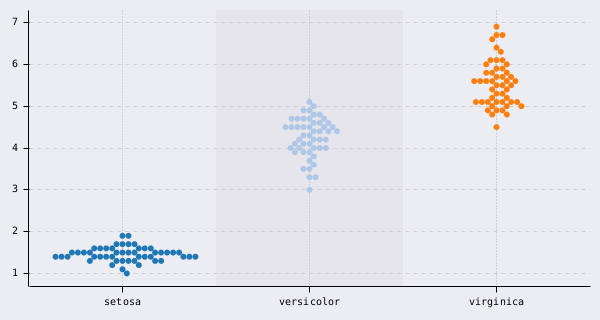
Its options: the point style (the size is also the packing diameter), squeezing a wide swarm into its slot, the packing direction and the padding:
| Option | Type | Default | Description |
|---|---|---|---|
| :size | a non-negative number | 6 | point size in pixels, also the packing diameter (a mapped :size wins) |
| :color | a clojure2d color or :none | [69.0 117.0 180.0 180.0] | point colour (a mapped :color wins) |
| :stroke-color | a clojure2d color or :none | :none | point outline colour (or :none) |
| :stroke-width | a non-negative number | 1 | outline width in pixels |
| :shape | a shape character, keyword or shape map | \O | point shape (a mapped :shape wins) |
| :fit | true or false or nil | true | squeeze a swarm wider than its item's cross range into it (points may then overlap) |
| :pack | one of :across :around | :across | packing: :across (points move only across the value axis) or :around (in both directions - round clusters, points may leave their value a little) |
| :padding | map of one of :x :y to [lo hi], non-negative numbers | [0.05 0.05] along the value axis; with :place :bottom also :bottom-share below the data | padding of the data span per position axis, {:x [lo hi] :y [lo hi]} fractions of the span |
(plot/render-image (plot/arrange [{:data iris
:mapping {:x :species :y :sepal-width}
:charts [(chart/beeswarm {:size 14 :fit false})]
:labels {:title ":size 14, :fit false"}}
{:data iris
:mapping {:x :species :y :sepal-width}
:charts [(chart/beeswarm {:size 14})]
:labels {:title ":size 14, :fit true"}}
{:data iris
:mapping {:x :species :y :sepal-width}
:charts [(chart/beeswarm {:pack :around :stroke-color :white})]
:labels {:title ":pack :around"}}]
{:columns 3})
{:width 1000 :height 320})
The point style, the default packing (:across - points move only across the value axis) and the padding:
(plot/render-image (plot/arrange [{:data iris
:mapping {:x :species :y :sepal-width}
:charts [(chart/beeswarm {:color [200 80 40 160] :shape \^ :stroke-color :black
:stroke-width 0.5 :pack :across})]
:labels {:title "triangles, outlined, :pack :across"}}
{:data iris
:mapping {:x :species :y :sepal-width}
:charts [(chart/beeswarm {:padding {:y [0.4 0.4]}})]
:labels {:title ":padding {:y [0.4 0.4]}"}}]
{:columns 2})
{:width 900 :height 320})
Shared options: Data and mapping (:data :mapping); Named theme styles (:theme-style); Strip options (:place :width :thickness :position :dodge-gap :bottom-share :n-label :n-format :level-axis).
17.5 dotplot
Values binned along the value axis, each a dot stacked in its bin (Wilkinson’s dot plot).
| Option | Type | Default | Description |
|---|---|---|---|
| :x | a keyword, a function or a categorical marker of one or nil | values (data units) on the value axis, or levels for vertical dot plots | |
| :y | a keyword, a function or a categorical marker of one or nil | levels on the categorical axis (absent - one dot plot), or values for vertical dot plots | |
| :color | a keyword, a function or a categorical marker of one or nil | groups, each in its own point colour | |
| :shape | a keyword, a function or a categorical marker of one or nil | groups, each with its own point shape | |
| :size | a keyword, a function or a categorical marker of one or nil | groups, each with its own point size | |
| :group | a keyword, a function or a categorical marker of one or nil | groups without a visual aesthetic (sharing stacks unless dodged) |
(plot/render-image {:data mtcars
:mapping {:x :mpg}
:charts [(chart/dotplot {:binwidth 1.5})]}
{:width 600 :height 280})
Its options: the dot style, the binning (density or fixed bins from an origin), where dots sit, how they stack and the padding:
| Option | Type | Default | Description |
|---|---|---|---|
| :size | a non-negative number | the dot diameter: the bin width in pixels, shrunk so the tallest stack fits its slot | dot size in pixels (a mapped :size wins) |
| :color | a clojure2d color or :none | [69.0 117.0 180.0 255.0] | point colour (a mapped :color wins) |
| :stroke-color | a clojure2d color or :none | :none | point outline colour (or :none) |
| :stroke-width | a non-negative number | 1 | outline width in pixels |
| :shape | a shape character, keyword or shape map | \O | point shape (a mapped :shape wins) |
| :method | one of :dot-density :histogram | :dot-density | binning: :dot-density (Wilkinson) or :histogram (fixed bins from :origin) |
| :binwidth | a finite number, a positive number | the range of all values / 30 (1 for a single distinct value) | bin width in data units |
| :origin | a finite number | the smallest value | left edge of the first fixed bin in data units (only with :method :histogram - an error otherwise) |
| :at | one of :center :value | :center | where a bin's dots sit along the value axis: :center (the bin centre) or :value (each dot at its own value - the wheat plot) |
| :stack-dir | one of :up :center | :up | stacking: :up (from the slot's low cross edge toward the next level) or :center (centred on the slot) |
| :padding | map of one of :x :y to [lo hi], non-negative numbers | [0.05 0.05] along the value axis; with :place :bottom also :bottom-share below the data | padding of the data span per position axis, {:x [lo hi] :y [lo hi]} fractions of the span |
(plot/render-image (plot/arrange [{:data mtcars
:mapping {:x :mpg}
:charts [(chart/dotplot {:method :histogram :binwidth 2 :origin 10})]
:labels {:title ":method :histogram"}}
{:data mtcars
:mapping {:x :mpg}
:charts [(chart/dotplot {:binwidth 1.5 :stack-dir :center :color [200 80 40]})]
:labels {:title ":stack-dir :center"}}
{:data mtcars
:mapping {:x :mpg}
:charts [(chart/dotplot {:binwidth 1.5 :at :value})]
:labels {:title ":at :value"}}]
{:columns 3})
{:width 1000 :height 280})
The defaults spelled out (:dot-density binning, dots at the bin :center, stacked :up), then a style - a fixed dot size, outlined squares - and the padding:
(plot/render-image (plot/arrange [{:data mtcars
:mapping {:x :mpg}
:charts [(chart/dotplot {:binwidth 1.5 :method :dot-density :at :center :stack-dir :up})]
:labels {:title "defaults"}}
{:data mtcars
:mapping {:x :mpg}
:charts [(chart/dotplot {:binwidth 1.5 :size 7 :shape \s :color [230 160 60]
:stroke-color :black :stroke-width 1})]
:labels {:title ":size 7, outlined squares"}}
{:data mtcars
:mapping {:x :mpg}
:charts [(chart/dotplot {:binwidth 1.5 :padding {:x [0.3 0.3]}})]
:labels {:title ":padding {:x [0.3 0.3]}"}}]
{:columns 3})
{:width 1000 :height 280})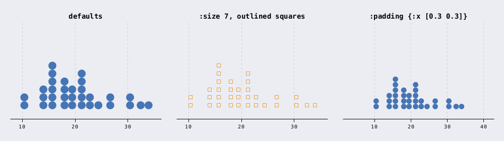
Shared options: Data and mapping (:data :mapping); Named theme styles (:theme-style); Strip options (:place :width :thickness :position :dodge-gap :bottom-share :n-label :n-format :level-axis).
17.6 rug
A short line per value - along the panel’s edge, or one strip per level; often beside another chart.
| Option | Type | Default | Description |
|---|---|---|---|
| :x | a keyword, a function or a categorical marker of one or nil | values (data units) on the value axis, or levels for vertical rugs | |
| :y | a keyword, a function or a categorical marker of one or nil | levels on the categorical axis (absent - one rug along the panel edge), or values for vertical rugs | |
| :color | a keyword, a function or a categorical marker of one or nil | groups, each in its own line colour | |
| :group | a keyword, a function or a categorical marker of one or nil | groups without a visual aesthetic |
(plot/render-image {:data iris
:mapping {:x :sepal-length :y :sepal-width}
:charts [(chart/scatter) (chart/rug {:mapping {:y nil}})]}
{:width 600 :height 320})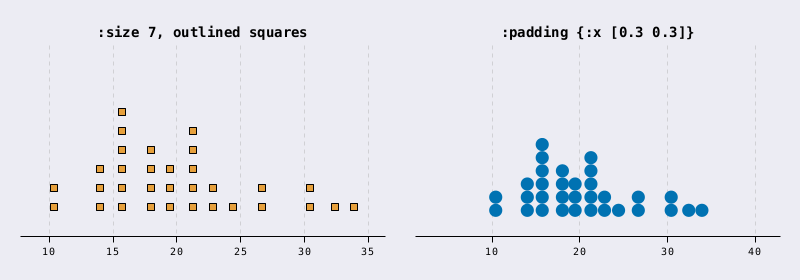
Its options: the line colour and width, and the padding:
| Option | Type | Default | Description |
|---|---|---|---|
| :color | a clojure2d color or :none | [69.0 117.0 180.0 100.0] | rug line colour (a mapped :color wins) |
| :line-width | a non-negative number | 1 | rug line width in pixels (0 - nothing drawn) |
| :padding | map of one of :x :y to [lo hi], non-negative numbers | [0.05 0.05] along the value axis; with :place :bottom also :bottom-share below the data | padding of the data span per position axis, {:x [lo hi] :y [lo hi]} fractions of the span |
(plot/render-image (plot/arrange [{:data iris
:mapping {:x :petal-length :y :species}
:charts [(chart/rug)]
:scales {:y {:reverse true}}
:labels {:title "defaults, a rug per level"}}
{:data iris
:mapping {:x :petal-length :y :species}
:charts [(chart/rug {:color [200 40 40 60] :line-width 3})]
:scales {:y {:reverse true}}
:labels {:title ":line-width 3"}}
{:data iris
:mapping {:x :petal-length :y :species}
:charts [(chart/rug {:padding {:x [0.3 0.3]}})]
:scales {:y {:reverse true}}
:labels {:title ":padding {:x [0.3 0.3]}"}}]
{:columns 3})
{:width 1000 :height 260})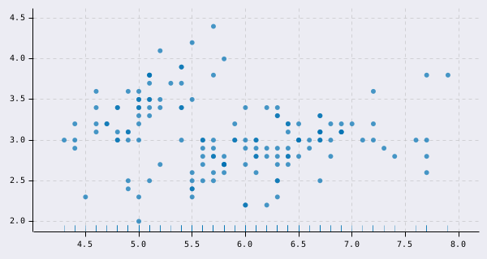
Shared options: Data and mapping (:data :mapping); Named theme styles (:theme-style); Strip options (:place :width :thickness :position :dodge-gap :bottom-share :n-label :n-format :level-axis).
source: notebooks/reference/charts_strip_distributions.clj